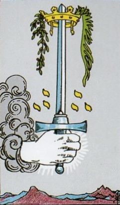
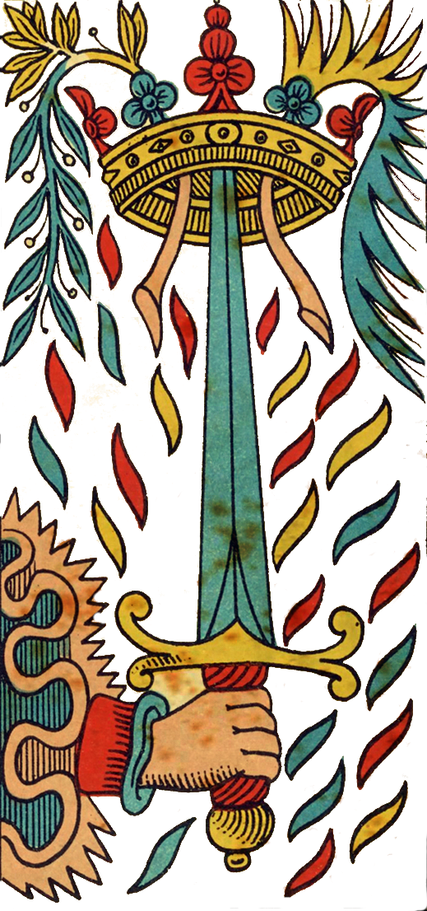
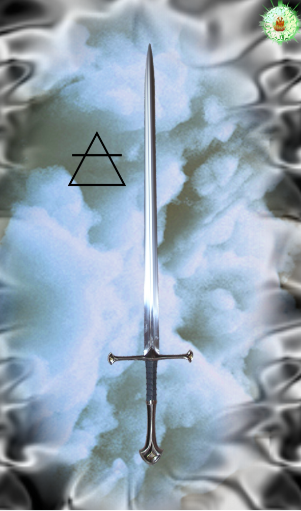
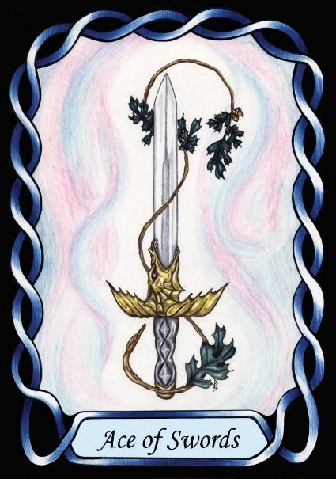

Ace of Swords




Air Human Interaction
The Ace of Swords is the Principle of Air, which is the most volatile of the elements after Fire. It is commonly attributed to Mind, as both are invisible and yet have an effect on the world. Gas.
Air imbues in people the ability to understand how people interact.
[P6] Then issues forth the Word of God. The Word descends from the light to the moisture (waters), … Air too rises from it [Ace of Swords], up to hang just below the Fire …
Meaning
This cad represents the element of Air, as a metaphor for the mind concerned with social issues. Air is considered to be Hot and Moist, so volatile, changeable, and Extroverted – concerned with others. The sword itself represents the social struggle of human nature, and so Air refers to extroverted thinking about other people, social issues, etc. Air signs think about the welfare of others, especially Justice.
In ancient Greek philosophy, particularly in Heraclitus and Plato (via the renaissance Neoplatonist school), the concept of the Word was known as Logos and referred to:
RWS Imagery
A Sword, symbol of Air, and the conflict of social ideas, issues forth from the cloud, as described in the Pymander, via a hand.